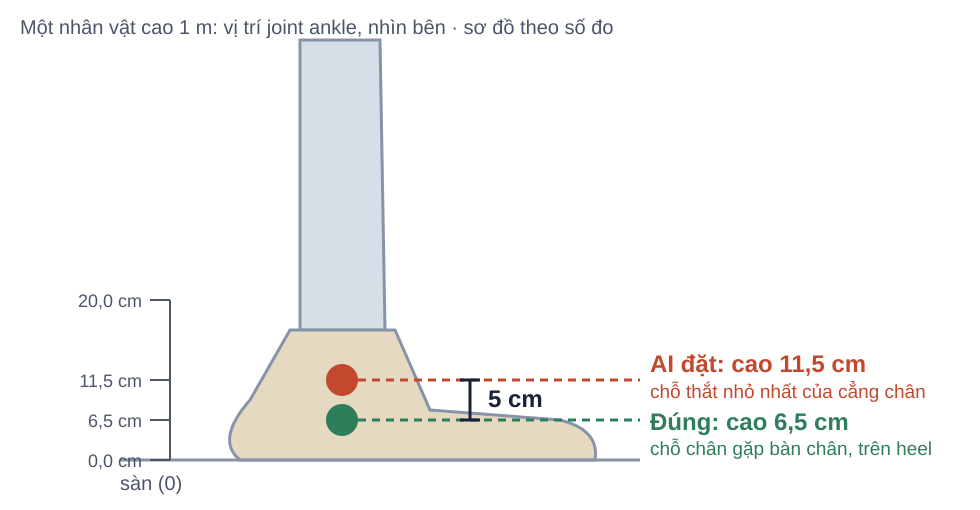
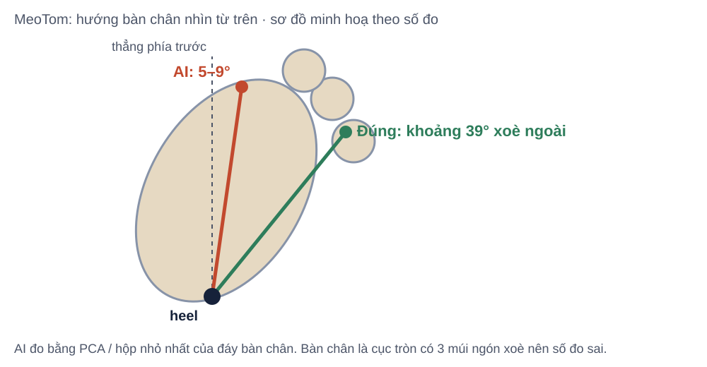
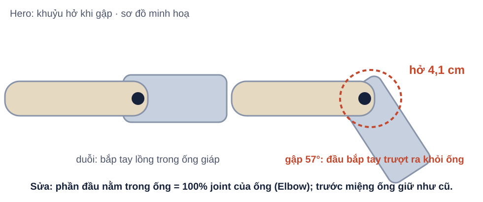
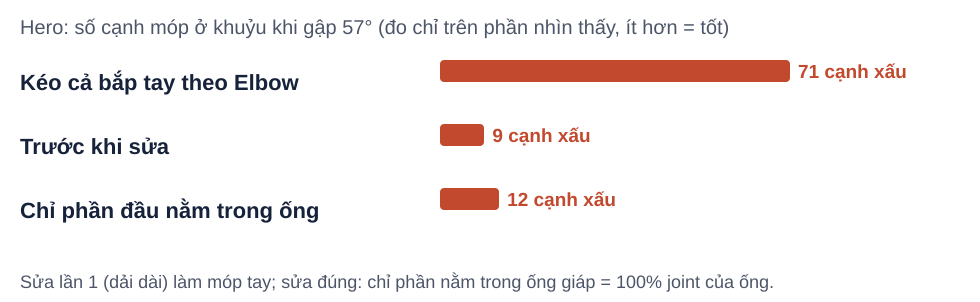
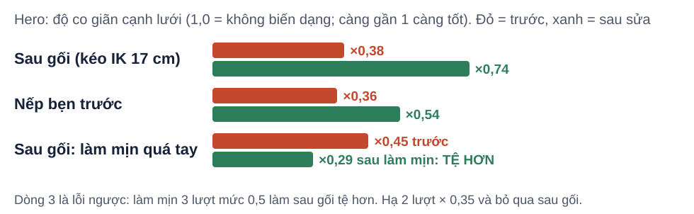
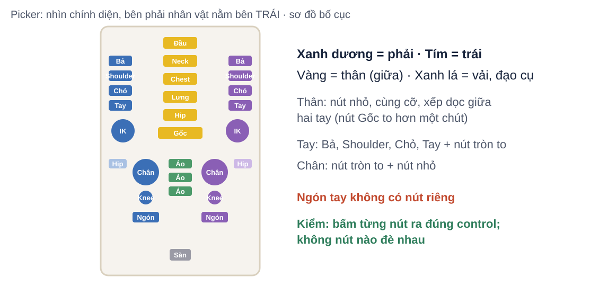
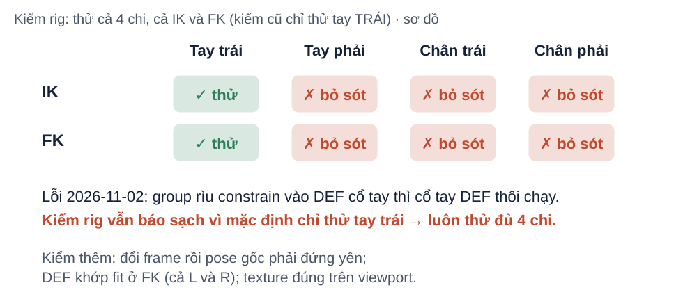

Art Animation · Rigging 3D với AI
Quy trình Rigging 3D
từng bước, kèm lỗi thật
Từ model trần tới rig chạy trong Unity. Mỗi bước có hình minh hoạ: ảnh thật từ các Pet đã làm (Night Bat, Mecha Pup, Wind Chameleon, Steam Pug, Kitsune, Pinchy) và sơ đồ vẽ theo số đo thật của Hero, MeoTom, London.
Tổng quan
10 bước, mỗi bước dừng ở cổng duyệt
Người duyệt luôn thắng
Người chỉnh joint hoặc skin bằng tay thì giữ nguyên. AI chỉ nhắc nếu thấy rủi ro, không tự đổi lại.
Mỗi cổng có hình để xem
Báo bằng số và hình (3 góc nhìn, thử khớp). Người xem trực tiếp trong Frolvy.
Chưa kiểm thì nói rõ
Chưa thử trong Unity, chưa playblast, chưa Director: ghi thẳng vào báo cáo.
Nhãn trên hình: ẢNH THẬT = chụp từ Frolvy trong dự án. SƠ ĐỒ = vẽ lại theo số đo thật, vì ảnh gốc của ca đó không còn trên máy này.
Luật chung
Rig cho game: 6 luật đã chốt với người dùng
1 · Chỉ joint base
Không helper, twist.
2 · Root_M = hông
Không Pelvis.
3 · Skin chỉ DEF
Tối đa 4 joint / đỉnh.
4 · Mảnh cứng 100%
Giáp, mắt, đạo cụ.
5 · Joint xa không kéo
Tay chân không kéo thân.
6 · Control ôm mesh
Thấy được, bấm được.
AI tự bật "helper set": thêm 126 joint thừa, thân bị kéo theo tay chân.

Bước 1 · Đo model
Đo bằng số trước khi giao việc, cắt đúng mảnh cần
Làm gì
- Liệt kê từng mảnh rời: kích thước, đơn vị, đối xứng, cạnh hở
- Đặt tên vai trò: thân, quần, giày, váy, giáp, khăn
- Báo mốc: chiều cao, hướng mặt, đạo cụ
- Cắt lát chỉ trên mảnh liên quan
Cắt cả model một lần: váy lẫn vào lát chân, giáp lẫn vào lát tay. Công cụ chỉ cắt mảnh lớn nhất nên lát chân / tay ra rỗng.
So số mesh cũ / mới trước khi giao: bắt được 2 file quay ngược 180°. Brief viết theo suy đoán ("mảnh 80 đỉnh là mắt") thì sai: đó là cánh Night Bat.

Bước 1b · Kiểm lưới và Retopology
Lưới không hợp rig thì skin kiểu gì cũng xấu
Kiểm: đạt hay chưa, chỗ nào
- Toàn quad, edge loop quanh vai, khuỷu, gối, cổ, mặt
- Pole và tam giác ở vùng gập
- Pose mesh (T / A), khớp hơi gập
- Số tam giác hợp mobile (~1.500–15.000)
- Giảm mesh (decimate) không phải retopo
- Bake normal từ Tripo mang theo lồi lõm: bỏ
- Frolvy lật dọc UV: bake phải lật mới đúng
- Quadriflow cho quad đều nhưng không theo xương, không có vòng mắt, miệng (Hậu: "cách đi lưới chưa đúng")

Cách đọc ảnh
Vòng lưới quanh mắt, miệng, gốc tai, chỗ nối cánh–thân. UV không chồng, mỗi mảnh một vùng riêng để bake texture sạch.
Bước 2 · Đặt joint fit
Joint là điểm xoay giải phẫu, chụp 3 góc gửi duyệt
Quy tắc
- Chỉ joint giữa + phải; Root = hông
- Đặt theo hình mesh từng vùng
- Chụp trước, bên, trên với joint chồng mesh, chờ duyệt rồi mới build
- Số đo tâm mặt cắt chỉ để tham khảo
Hình bên phải
Joint chồng mesh ở các Pet: người duyệt nhìn đường xương có nằm đúng tâm xoay (vai, gốc cánh, chân, gốc đuôi) hay không.


Bước 2 · Ví dụ lỗi
MeoTom: AI đặt theo tâm hình khối, Hậu chỉnh tay 18 / 33 joint hơn 2 cm


| Joint | AI đặt | Đúng (Hậu chỉnh) |
|---|---|---|
| Hông | Tâm bbox đùi, x 0,093 | Tâm đùi trung bình hai bên, x 0,068 |
| Cột sống | Cách 7,5 / 11,5 cm, Neck thấp 2,9 cm | Chia đều 9,2 cm |
| Tai, hàm | Gốc tai theo mép ngoài (lệch ~5 cm); JawEnd ở đáy cằm | Gốc tai sát đỉnh đầu, vào trong; JawEnd ở mút môi dưới |
Bước 3–4 · Chuỗi joint, người sửa joint
Chuỗi theo đúng hình đuôi, tai, hàm, vải
Quy tắc
- Đuôi: theo đường tâm, thêm đốt ở chỗ cuộn; điểm cuối nằm trong mesh
- Vải (váy, khăn): joint đầu ở mép trên vạt, không ở Root
- Người sửa joint thì giữ nguyên, chỉ đặt lại con trực tiếp về vị trí cũ
- Vải hai bên không đối xứng: mỗi dải một chuỗi, tắt mirror
Hero: người dùng hạ Root / Chest / Neck 4–13 cm → phải đặt lại Hip, Scapula, khăn, HeadEnd; Neck / Head hạ dưới vai thì AI chỉ nhắc rủi ro.
Hero Axe: Build với danh sách một-bên rỗng từng xoá cả control bên trái, hoàn tác không lấy lại.


Bước 5 · Build Rig
Build một lần cho sạch, Rebuild thì kiểm lại
Trước và sau khi build
- Tắt helper, bendy, twist; mọi control về 0; Root ở hông
- Sau build: không bản trái thừa, DEF khớp fit ở FK, switch hai bên cùng cỡ
Rebuild khi Pelvis đang posed: pose bị nướng vào nhóm offset, rig nghiêng dù control = 0. Mất dây translate tuỳ chỉnh; pivot control (Neck, Head, Scapula) ở chỗ joint cũ.
Dựng lại rig trong cùng scene: joint, constraint cũ vẫn bị xuất ra thành joint ma trong FBX. MeoTom: rest đọc lệch 0,1–0,9 m ở đuôi, hàm, tai sau Build.
Bước 5 · Control và switch
Control phải thấy được, bấm được, hai bên giống nhau
Quy tắc
- Vẽ ôm mesh (đo mặt cắt, cộng vài cm); IK chân là hộp ôm giày
- Control trục giữa cùng cỡ, ở giữa (trừ Root)
- Hai bên soi gương nhau; switch cùng cỡ
- Hero: "mỗi lần tạo control luôn bị ẩn trong mesh"
- Hero: vòng cổ chân 2 m, vai 2,5 m (váy, mũ là lưới một lớp)
- Hero Axe: cổ tay 1,46 m, Root 1,85 m vì vòng ôm cả rìu
- Hero: switch tay phải ra 2 cm trong bàn tay, tay trái 5,6 cm trên cổ tay


Bước 6 · Skin
Night Bat: thử 9 pose mặt trước, lần đầu so với lần thứ 13


Nguyên nhân gốc không phải trọng số: skin được bind khi một control đang posed, bind pose ghi lệch. Phòng: control = 0, đổi frame rồi về 0, bind, kiểm đối xứng ở pose 0.
Bước 6 · Skin: mesh hàn liền
Tai nối cánh bằng mặt dài: skin không tách nổi
Mặt nối giữa tai và cánh giãn ×2–3 khi xoay mạnh, dù đã chỉnh weight nhiều vòng.
- Tách tai (cùng phần màng nối) thành mesh riêng
- Gốc tai pha dần sang Head
- Base FBX thành 2 mesh
Kiểm bằng gì
Lấy vị trí đỉnh sau khi skin, đo giãn cạnh và dịch chuyển theo nhóm (cánh, tai, đầu, thân). Số đẹp vẫn phải xem hình.


Bước 6 · Skin: thân, vai, tay
Vai và ống tay: vùng dễ móp nhất
| Dự án | Người dùng thấy | Sửa |
|---|---|---|
| Nova | Xoay vai, ống tay thót hình nêm | Mép dưới ống tay còn bám thân. Vertex tay chỉ bám Shoulder (+ Elbow gần khuỷu) |
| Hero | Bả vai không theo Scapula | Scapula tới 75% ở bả vai, đỉnh vai (biểu đồ dưới) |
| Hero | Đai cứng khi xoay Spine1 | Chia đai Root → Spine1 theo chiều cao |
| Hero | Cổ áo, cổ bị co | Chia theo bán kính tới trục cổ |
| Hero Axe | Vành mũ chibi ăn Shoulder ×4,4 | Trên chỗ cổ hẹp nhất, mọi đỉnh là đầu |

Bước 6 · Skin: khuỷu
Khuỷu hở khi gập: sửa quá tay cũng móp


Người dùng: "chỉ gắn cứng phần mesh ở đầu thôi, giờ xoay lại bị móp tay". Đếm cả cạnh trong ống ra số ngược (37 vs 43): đo sai chỗ.
Chỉ phần nằm trong ống = 100% joint của ống. Đo độ móp trên phần nhìn thấy, kèm camera cận.
Bước 6 · Skin: chân
Chân móp khi kéo IK: sửa trước và sau gối khác nhau
"Tay không móp mà chân móp, nhiều vertex chân ăn sai joint": 74 / 545 đỉnh sai. Chân dùng dải chiều cao tự đặt, không bám khớp như tay.
- Chân chia theo xương như tay
- Sau gối chuyển gọn, trước gối giữ rộng
- Làm mịn có bỏ qua sau gối, đáy quần
Giới hạn thật
Lưới thưa (cạnh 9 cm qua nếp bẹn) không thể hết hẳn. Gập đùi trên 60° hoặc cúi thân 40° bằng một khớp: anim nên chia góc cho Spine1, Chest, Neck.


Bước 6 · Skin: kiểm weight
Lỗi ngầm: pose gốc nhìn ổn, chạy anim mới vỡ

Rig không về dáng gốc: bind lệch gối 2,1 cm, kênh control "đường cong chết" giữ giá trị lệch. Phiên con không tự thấy. Tự kiểm: đổi frame rồi xem pose gốc có đứng yên không.

root (đầu cây) không skin, hông là Root_M. Chạy công cụ đo root trước khi xuất, phải ra "ok"; lỗi thì cộng weight root vào Root_M.
Bước 7 · Picker
Picker đơn giản: ít nút, to, đúng chỗ
Kiểm
- Bấm từng nút = đúng control của nó
- Không nút nào đè nhau
- Liệt kê control không có nút
- Nút All chứa mọi control
Đổi cỡ control 3D mà không đổi nút picker: "kích cỡ control thân ở picker vẫn chưa thay đổi", rồi "cho nhỏ lại và nằm ở giữa 2 tay". Hai vòng sửa vì không đồng bộ picker với control.

Bước 8 · Kiểm rig
Thử rig như animator sẽ dùng, không chỉ đọc số
Group rìu constrain vào DEF cổ tay làm cổ tay DEF thôi chạy. Kiểm rig báo sạch vì mặc định chỉ thử tay trái.
Hàm thử biến dạng đưa control về 0 nên xoá mất pose người dùng đang thử (2 lần). Bọc thử nghiệm trong hàm giữ pose.
Hậu: "rig chưa ổn", "mọi joint sai". AI báo xong khi chưa soi control, joint từng cái bằng số.
Báo thẳng khi chưa kiểm
Chưa nhập Unity, chưa playblast, chưa Director, chưa kiểm xuyên mesh (cánh–thân, đuôi–mào).


Bước 9 · Xuất FBX và Unity
FBX Frolvy cần xử lý thêm trước khi vào Unity

Luật
- Base = xương + mesh; file anim = chỉ xương + clip
- Chỉ xuất khi người duyệt nói "chốt"
- Rig Generic của team: rig Frolvy lái skeleton cũ (tên, cây joint, trục giữ nguyên)
- Có lỗi mới: đọc log Unity chạy nền, không đoán
| Lỗi người dùng thấy | Nguyên nhân | Cách sửa |
|---|---|---|
| Base vỡ skin: đầu, chân bay khỏi thân | Unity lấy Transform của cluster làm bind pose; Frolvy không ghi BindPose | Thêm BindPose; bỏ clip tĩnh khỏi Base |
| Copy Avatar: "Cannot find root motion transform" | File anim chỉ có một nút gốc nên Unity coi nó là gốc file | Thêm Null "Dummy" cùng cấp, chỉ ở file anim |
| Joint ma, node thừa trong FBX | Frolvy luôn ghi cả scene | Lọc sau khi xuất: giữ cây root + mesh |
Bẫy của công cụ
Bẫy Frolvy đã gặp: biết trước để khỏi mất việc
Xoá khi đang ở chế độ đỉnh / mặt: chỉ số mặt chung cả scene nên xoá nhầm mesh khác (2026-10-31 Body mất nửa dưới), Ctrl+Z không lấy lại. Luôn về chế độ object, kiểm vùng chọn.
Hoàn tác nhiều bước có thể lùi quá cả việc người dùng làm. Sửa tiến, kiểm lại trạng thái sau undo.
Cổng chết thì công cụ tự nhảy sang cửa sổ Frolvy khác không báo: lệnh chạy nhầm Pet khác. Kiểm scene sau mỗi lần khởi động lại.
Lưu sang file đã có thì trả False; mở file khi scene đang sửa thì trả False và lệnh nhập sau đó chồng vào scene rig.
Giữ translate cục bộ của con (cả cây nhảy lên), xoá nhãn cha. Skin vẫn trỏ joint đã xoá sau Rebuild: lưu weight trước.
Gặp lỗi của Frolvy
Ghi một dòng (Lỗi / Cách thấy / Mong muốn), hỏi người dùng rồi mới gửi cho đội phát triển.
Bẫy autoSnap (chuyển IK ↔ FK chép pose sang control): xem sơ đồ ở trang Kiểm rig.
Tổng kết lỗi
Sáu nhóm lỗi AI hay mắc khi rig
| Nhóm | Ví dụ | Phòng bằng |
|---|---|---|
| Làm thừa | Bật helper set (126 joint thừa); xoá cả control bên trái | Chỉ làm đúng luật đã chốt, hỏi khi không chắc |
| Tin số, bỏ mắt | Độ giãn cạnh đẹp mà ống tay vẫn thót; đo cả phần trong ống | Xem hình ở góc thật; đo trên phần nhìn thấy |
| Đặt theo hình khối | Cổ chân, hông, tai, hàm lệch 2–5 cm so với điểm xoay | Đặt theo giải phẫu, chụp 3 góc gửi duyệt |
| Sai chỗ gốc | Bind khi control posed (4 vòng sửa weight); root có skin | Control = 0 trước bind; đo root trước khi xuất |
| Không đồng bộ | Switch hai bên khác cỡ; picker không theo control | So R / L; sửa control thì sửa picker |
| Báo xong sớm | "Rig xong" khi chưa thử 4 tay chân, chưa vào Unity | Danh sách "chưa kiểm" ghi thẳng trong báo cáo |
Trước khi gửi duyệt
Checklist rig, 12 mục
- Lưới đã kiểm, retopo xong nếu cần
- Joint đặt theo điểm xoay, đã gửi 3 góc
- Root_M ở hông, không helper / twist
- Control ôm mesh, không ẩn, không quá to
- Trái / phải đối xứng (cỡ, switch)
- Joint của người chỉnh được giữ
- Skin chỉ DEF, tối đa 4 joint, không lẫn bên
- Root skin = 0 đỉnh
- Thử vai, khuỷu, hông, gối, cổ, thân bằng mắt
- Pose gốc đứng yên khi đổi frame; texture đúng
- Picker khớp control, không nút đè nhau
- Danh sách việc chưa kiểm ghi rõ
Gợi ý: gửi checklist này kèm mỗi bản rig để người duyệt biết đã kiểm tới đâu.